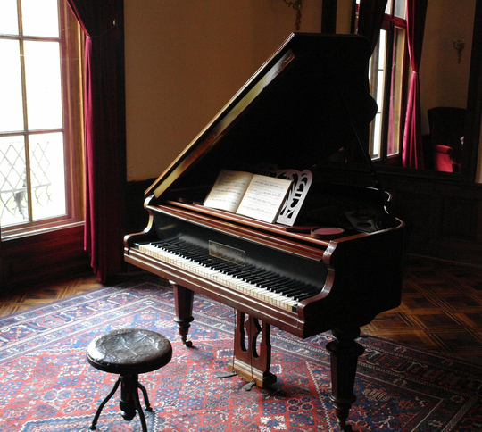

Ses üretim mekanizması, piyanoyu diğer tuşlu çalgılardan ayıran önemli bir özelliktir. Piyanoda bir tuşa basıldığında, tuşun bağlı olduğu bir çekiç hareket eder ve tel grubuna vurarak titreşim oluşturur. Bu titreşim, ses tahtası ve yankı kutusu sayesinde yükseltilir ve kulağımıza temiz bir tonda ulaşır. Her bir telin farklı bir frekansta titreşmesiyle birlikte piyanonun geniş ses aralığı sağlanır. Piyanonun en dikkat çekici özelliklerinden biri, 88 tuştan oluşan tuş dizisidir. Bu tuşlar, bas (sol), orta ve tiz (sağ) bölgelere ayrılır. Çalgının alt sesleri solda, üst sesleri ise sağda yer alır, bu sayede müzisyen hem geniş bir melodik yelpazeyi hem de armonik zenginliği bir arada kullanabilir. Piyano, müziğin hem melodi hem de akor bölümlerini tek başına icra edebilmesiyle bilinir, bu yüzden çoğu zaman "tam bir orkestra" gibi düşünülür. Piyano öğrenmek, özellikle başlangıçta karmaşık görünse de, temel bilgileri öğrendikçe ilerlemesi oldukça zevklidir. Temel nota okuma becerisi, pozisyon çalışmaları ve parmak egzersizleri ile başlayarak daha karmaşık eserlere geçiş yapılabilir. Çocuklardan yetişkinlere, her yaş grubundan insanların çalmayı öğrenebileceği bir çalgıdır. Piyanonun çalma tekniği geliştikçe, duygu ifadeleri ve performans becerileri de daha etkileyici hale gelir; zira piyanist tuşlara farklı şiddetlerde basarak yumuşak veya güçlü tonlar elde edebilir. Özellikle klasik müzikte, piyanonun ifade gücü o kadar güçlüdür ki, tek bir piyano eserinde bile sayısız duygu yelpazesi hissedilebilir.
